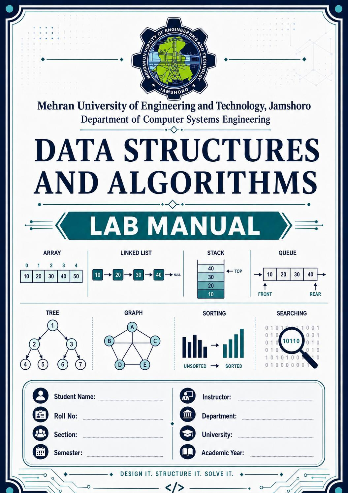
| Solution | cbm: a Context Budget Manager that takes a retriever's candidate passages and returns a budget-safe, ordered, traceable context package. Four policies: recency-first, relevance-first, relevance-per-token and the proposed hybrid fresh-cover policy. |
|---|---|
| Language / build | C++17, g++ -std=c++17 -O2 -Wall -Wextra (TDM-GCC 10.3.0), compiles with 0 warnings. Optional plotting script in Python 3 (standard library only). |
| Student-written DSA | Binary heap / priority queue (Floyd build, sift-up/down) · Merge sort (array, stable) · Singly linked list with list merge sort · Open-addressing hash map (FNV-1a, linear probing) · Lazy greedy selection · SplitMix64 generator |
| Source | cep/src/: binary_heap.h, merge_sort.h, linked_list.h, hash_map.h, passage.h, loader.*, selector.*, agent.*, dataset.*, experiments.*, tests.cpp, main.cpp · cep/scripts/plot_scaling.py |
| Final state | cbm test: 29/29 PASS · 0 budget violations in 384 evaluation runs, 320 MUET-document runs and 24,000 random runs · 32 labelled scenarios / 1,300 passages, plus the MUET document set (20 questions × 155 passages) · benchmark at n = 100 to 100,000 · all numbers below come from files in cep/results/ |
Before each answer, the university's academic-support agent receives candidate passages (policies, notices, FAQ entries, chat memory) whose total size is several times the context it may send. The CBM starts after retrieval and ends with an ordered, budget-safe package. It must keep the passages that carry the needed facts, prefer current and traceable sources, avoid wasting tokens on copies, never exceed the budget, and decide quickly.
Answer to the driving question (short form): represent each passage as an indivisible item with cost, relevance, freshness, reliability, duplicate group and evidence tags. Place mandatory items first or declare INFEASIBLE. Select the rest greedily by marginal new evidence per √token from a lazily updated max-heap, after excluding superseded passages. Order the package with mandatory items first, then by acceptance priority. Sections 6 and 7 justify this with measurements.
| Quantity | Definition used in every policy | Values in the experiments |
|---|---|---|
| BCTX | max(0, Btotal − Rfixed − Ranswer) (Budget::context(), test T02) | Rfixed = 300, Ranswer = 500, Btotal = 1056 / 1312 / 1824 → BCTX = 256 / 512 / 1024 |
| ci | Nonnegative integer from the fixture: body tokens + 6 tokens for the [n] (id | source | date | rel) label and separator. No character-count estimate is used anywhere. | 16 to 375 tokens; mean 72.3, median 54, p90 151 |
| Constraint | Σi∈S ci ≤ BCTX for every accepted selection S; checked inside the selector and again independently by the evaluator | 0 violations (T14, T26, Table 6.1) |
| Stakeholder | Requirement | Conflicts with | Design decision and its cost (evidence) |
|---|---|---|---|
| Students | Useful, evidence-supported answers; short response time | Operators' token limit (more evidence needs more tokens); policy officers' freshness rule (a stale passage may score higher) | Maximise new gold evidence per token instead of raw relevance. Hybrid coverage 0.792 / 0.908 / 1.000 against the best baseline's 0.631 / 0.842 / 0.967 (6.1). Selection costs 16 µs against 6 to 7 µs at n ≈ 41. |
| Policy officers | Current, traceable policy evidence must take precedence over obsolete notices | Relevance: old notices and reposts score 0.78 to 0.95, the revision 0.62 to 0.80 | Hard exclusion of passages superseded by a candidate (and of copies of them); mandatory notices first; every item keeps passage_id and source_id. Hybrid selected 0 stale passages against 56 for relevance-first at 512 (6.2). |
| System operators | Predictable memory, controlled token spend, robust behaviour under large workloads | The hybrid's extra state (hash maps) costs memory and time | O(n) memory for every policy; hard budget check; INFEASIBLE instead of silent dropping; deterministic tie-break; JSON run log. Measured cost: hybrid uses 1.76 MB against 0.23 MB for heap baselines and 5.0 ms against 0.84 ms at n = 10,000 (4.2). |
| All | Use the budget well | Filling every token against redundancy | The hybrid leaves tokens unspent rather than add copies with no new evidence: 97.8 % of BCTX used at 512 against 98.5 % for relevance-first, with 0 redundant items against 82 (6.1). |
| Constraint from the brief | How this solution complies |
|---|---|
| At least two DSA structures/algorithms in own code | Heap, merge sort, linked list (+ list merge sort), hash map, lazy greedy: all in cep/src/*.h, no STL algorithm, container adaptor or hash table is used for assessed logic (Part 3.2) |
| Passages are indivisible | An item is accepted only if its whole ci fits (Packer::tryAccept); nothing is truncated |
| Keep IDs, cost, rationale, order | Chosen{index, priority, mandatory} + candidate record; the package prints id, source, date, reliability, ci, key and tags (Part 9) |
| Never exceed BCTX; INFEASIBLE for mandatory overflow | Proof in 3.6; tests T04, T07, T14, T26; edge cases E05, E12; scenario Q10 |
| Consistent tie-break, seed, determinism | Tie chain relevance ↓, timestamp ↓, passage_id ↑ for all policies (T09); dataset seed 2026, workload seed 20260000 + n (T27, T28) |
| No personal / confidential data to external APIs | All data is synthetic and generated locally; no network or model API is called |
Assumptions: relevance scores come from an existing retriever (given, in [0,1]); freshness is an ISO timestamp; a newer passage declares what it replaces through a supersedes link (unlinked contradictions are a stated limitation, 8.4); evidence tags (key:value) are produced by the retriever/annotator and are trusted metadata.
| Target (set for this solution) | Target value | Achieved (hybrid unless stated) |
|---|---|---|
| Budget violations, all policies, all runs | 0 | 0 / 384 eval runs, 0 / 24,000 random runs |
| Mean gold-evidence coverage at BCTX = 512 | ≥ 0.85 and above every baseline | 0.908 (best baseline 0.842) |
| Superseded passages selected when the newer one is a candidate | 0 | 0 at all budgets |
| Redundant copies selected (beyond first per group) | ≤ 5 % of selected | 0 |
| Median selection time, n = 1,000 / 10,000 | ≤ 1 ms / ≤ 10 ms | 0.139 ms / 5.05 ms |
| Auxiliary memory at n = 10,000 | O(n), ≤ 2 MB | 1.76 MB |
| Infeasible mandatory sets reported, not dropped | 100 % | Q10 at 256/512, E05, E12, T04, T07 |
| Requirement | Implementation | Evidence |
|---|---|---|
| FR-1 Representation | struct Passage with all brief fields (data dictionary 2.1) | passage.h, 2.1 |
| FR-2 Ingestion, validation | loadPassages: 12-field parse, per-field checks, hash-map duplicate-id check, line-numbered errors; empty input and zero capacity handled | T01, T03, T10, T11, 8.3 |
| FR-3 Baselines | Recency-first, relevance-first, relevance-per-token, each with a merge-sort engine and a heap engine; same feasibility check, tie chain and data | T15, 6.1 |
| FR-4 Proposed policy | Hybrid fresh-cover (3.4) addresses freshness + evidence coverage + redundancy + latency | 6.1 to 6.4 |
| FR-5 Hard budget | Mandatory first or INFEASIBLE with diagnostic; remaining-capacity check before every optional item; BCTX passed in, data unchanged | T04, T07, T08, T14, E11 |
| FR-6 Redundancy, coverage | dup_group and evidence tags tracked; hybrid discounts a chosen group ×0.3 and omits a copy that adds no new tag (reason "duplicate group already covered") | T12, E07, 6.2 |
| FR-7 Source / freshness | Stale = superseded by a candidate, or a copy (same group) of a superseded passage; excluded by default, ×0.25 penalty as sensitivity; reliability weight A 1.0 / B 0.85 / C 0.7; provenance kept | T13, E08, 6.4 |
| FR-8 Ordering, packaging | Linked-list package, list merge sort by rule: priority (default), oldest-first, newest-first. Output: tokens used, unspent, selected ids, every omitted id with a reason | T22, T23, Part 9 |
| FR-9 Agent interface | buildPackage → ContextPackage → QaAgent::answer; selector has no model code. Two offline agents (first-mention, authority) | T23, T24, 6.3 |
| FR-10 Observability | results/run_log.jsonl: policy, parameters, Btotal/reserves/BCTX, n, seed, reps, median µs, comparisons, heap pops, re-insertions, aux bytes, status, tokens, selected ids (384 lines) | run_log.jsonl |
| Field | Type | Rule | Missing / invalid |
|---|---|---|---|
| query_id, passage_id | string | passage_id unique within a query | Reject record; duplicate id → reject later copy, cite first line |
| source_id | string | Provenance, kept in the package | Reject (missing provenance) |
| timestamp | YYYY-MM-DDThh:mm | Freshness indicator; stored as int64 YYYYMMDDhhmm | Reject (bad format or range) |
| token_cost ci | int ≥ 0 | Includes 6-token label overhead; 0 allowed | Reject negative, non-integer, empty |
| relevance | real in [0,1] | Retriever score | Reject non-number / out of range |
| reliability | A / B / C | Weight 1.0 / 0.85 / 0.7 | Reject other values |
| dup_group | string | Near-duplicate group | - → own passage_id (no group) |
| evidence_tags | key:value list | Facts stated by the passage | - → none; malformed tag → reject |
| mandatory | 0 / 1 | Must be included | Reject other values |
| supersedes | passage_id | Newer passage replaces the named one | - → none; self-reference → reject |
| text | string | Passage text (key sentence) | - → empty text |
Interdependence (WP7): the loader's duplicate-id rule makes passage_id a safe hash key for stale detection. The supersede metadata decides what the policy may select. Packaging order changes what a position-biased agent answers (6.3). The evaluator recomputes every metric from ids, independently of the selector's own bookkeeping.
| Structure / algorithm | Operations written by us | Where it is used | Cost |
|---|---|---|---|
Binary heap (priority queue), binary_heap.h | Floyd bottom-up build, push (sift-up), pop (sift-down), top, isHeap, comparison counter | Heap engine of the baselines; lazy greedy of the hybrid | build O(n), push/pop O(log n) |
Merge sort, merge_sort.h | Top-down, stable, one buffer, skips merge when halves are ordered | Sort engine of the baselines; mandatory ordering; medians | Θ(n log n) worst/avg, Θ(n) best; O(n) space |
Singly linked list, linked_list.h | pushBack with tail pointer, in-place list merge sort (slow/fast split), forEach | Context package assembly and ordering | append O(1), sort O(k log k) |
Hash map, hash_map.h | Open addressing, linear probing, FNV-1a, growth at load 0.6, invariant check | Duplicate-id check, id → index for supersede links, stale groups, covered tags, chosen groups | expected O(1), worst O(n) |
Lazy greedy selection, selector.cpp | Upper-bound keys in a max-heap, re-evaluate on pop, re-insert if beaten | Hybrid policy | see 4.1 |
| SplitMix64, Fisher–Yates | PRNG and shuffle | Reproducible dataset and workloads | O(1) per draw |
Library use (declared): std::vector and std::string as storage only; iostream/fstream/sstream for I/O; std::chrono::steady_clock for timing; std::pow. No std::sort, std::priority_queue, std::make_heap, std::unordered_map, std::map or std::list is used. The plotting script uses only Python's csv and math.
| Policy | Priority key (descending) | Selection procedure |
|---|---|---|
| (a) Recency-first | timestamp | Mandatory first (or INFEASIBLE). Then first-fit over optional items in key order: accept if ci ≤ remaining, else omit with reason. Sort engine: merge sort + one scan. Heap engine: Floyd build, pop until empty or remaining < min ci. Both give identical packages (T15, and "same = yes" in every benchmark row). |
| (b) Relevance-first | relevance | |
| (c) Relevance-per-token | relevance / ci (ci = 0 ranks as 0.5) | |
| (d) Hybrid fresh-cover (proposed) | gain(i | S) / max(ci,1)α, α = 0.5 | Mandatory first. Exclude stale passages. Lazy greedy over a max-heap with marginal gain (3.4). |
| Tie chain for every key: relevance ↓, then timestamp ↓, then passage_id ↑ (ids are unique, so the order is total and output is deterministic for fixed input; T09 checks that it does not depend on input order). | ||
Requirements it answers: (1) freshness and traceability (policy officers); (2) evidence coverage, not raw relevance (students); (3) redundancy and token control (operators); (4) bounded latency (operators). These interact: removing stale items frees budget for coverage; discounting copies lets one long-relevance group stop crowding out other sources.
w(i) = relevance(i) × relWeight(reliability(i)) // A 1.0, B 0.85, C 0.7
gain(i | S) = w(i) × (λ + (1−λ) × newTags(i,S)/|tags(i)|) × (dupPenalty if group(i) already in S)
priority(i) = gain(i | S) / max(c_i, 1)^α // λ = 0.2, dupPenalty = 0.3, α = 0.5
HYBRID_SELECT(cands, B_CTX):
ids ← HashMap passage_id → index // O(n) expected
for each j with supersedes(j) present in ids: stale[ids[supersedes(j)]] ← j
for each i in the duplicate group of a stale passage: stale[i] ← same newer passage
if Σ cost(mandatory) > B_CTX: return INFEASIBLE(diagnostic)
accept every mandatory item; mark its tags covered and its group chosen
items ← { (priority(i), i) : optional, not stale (else omit "superseded by j"),
c_i ≤ B_CTX (else omit "exceeds B_CTX") }
heap ← FLOYD_BUILD(items) // O(n)
while heap not empty and remaining ≥ minCost:
(key, i) ← heap.pop()
if c_i > remaining: omit i "insufficient capacity"; continue
if group chosen and no new tag: omit i "duplicate, no new evidence"; continue
p ← priority(i) // true value now
if p < key and heap.top() beats (p, i): heap.push((p, i)); continue // lazy re-insert
accept i; remaining −= c_i; mark tags covered, group chosen
omit everything left in the heap with its reason
package ← LINKED_LIST(accepted); LIST_MERGE_SORT(package, order rule)
| Invariant | Why it holds / how it is checked |
|---|---|
| Σ c(S) ≤ BCTX after every step | Every acceptance checks ci ≤ remaining first; remaining starts at BCTX (3.6). T14, T26. |
| Heap order | Sift-up/down maintain parent ≥ child; isHeap() checked under 20,000 random operations (T17). |
| Stored heap keys are upper bounds of true priorities | newTags can only fall and a group can only become chosen as S grows, so gain never increases. Hence the lazy result equals the eager O(n²) greedy (T16: 1,000 random instances, 1,442 re-insertions exercised, 0 mismatches). |
| Selected ∪ omitted = candidates, disjoint | Every candidate leaves through exactly one accept or omit (T14, partition check). |
| No stale passage selected unless mandatory | Excluded before the heap is built (T13, E08). |
| Decision | Alternative A | Alternative B | Chosen | Reason / trade-off (measured where possible) |
|---|---|---|---|---|
| Order optional items | Merge sort all n, then scan | Heapify O(n), pop only what is needed | Both, B default for speed | Same package (T15). At n = 10,000: 127,267 comparisons and 3.22 ms (sort) against 19,287 and 0.88 ms (heap). Sorting is kept because it is simple, stable and its cost does not depend on k. |
| Hybrid gain updates | Eager: recompute all gains each step, O(n·k) | Lazy heap re-evaluation | B | Identical output (T16); only 0 to 309 re-insertions at n = 10,000 (4.2). |
| Cost normalisation | α = 0 (gain only) or α = 1 (gain per token) | α = 0.5 (gain per √token) | B | α = 0 lost coverage at 256 (0.683); α = 1 lost at 256 (0.750); α = 0.5 gave 0.792. α = 0 was better on multi-source at 512 (0.875 against 0.825): a negative finding (6.4). |
| Stale handling | Penalty ×0.25 | Exclusion | B | Same coverage; penalty let 2 stale passages in at 1024 (6.4); policy officers need hard precedence. |
| Package store | Array + insertion | Linked list + list merge sort | B | O(1) append while accepting, O(k log k) reorder with no second array; k is small, so the cost is negligible either way. |
| Id / tag lookup | Linear search O(n) per lookup | Hash map | B | Stale propagation would be O(n²) with search; with hashing it is O(n) expected. The cost is memory: the hybrid needs 1.76 MB of auxiliary memory at n = 10,000 against 0.23 MB for the heap baselines. |
| Exact optimisation | 0/1-knapsack dynamic programming | Greedy | B | The brief excludes advanced DP, and the objective (coverage) is not additive. Greedy carries no optimality claim (3.7). |
Let r be the remaining capacity. Initially r = BCTX ≥ 0. (i) If Σ c(mandatory) > BCTX, nothing is accepted and the status is INFEASIBLE, so Σ c(S) = 0 ≤ BCTX. (ii) Otherwise every acceptance, mandatory or optional, in every policy goes through Packer::tryAccept, which accepts i only if ci ≤ r and then sets r ← r − ci. By induction r ≥ 0 after every step, and Σ c(S) = BCTX − r ≤ BCTX. Since ci ≥ 0 is validated at load, r never increases. (iii) An independent validator recomputes Σ c from the final ids and would set BUDGET_VIOLATION; it never fired in 24,000 random runs (T14) or 384 evaluation runs (T26). ∎
The hybrid is a heuristic. Selecting passages to cover the most tags under a token budget is a budgeted maximum-coverage problem (NP-hard). Plain cost-scaled greedy has no constant-factor guarantee without the "best single item" comparison of Khuller et al. [5], which this solution does not implement. The hybrid also relies on the retriever's relevance to separate gold from non-gold facts, and fails when distractors look equally relevant (E09, 8.2).
n = candidates, m = mandatory, k = selected, p = heap pops (k ≤ p ≤ n), r = lazy re-insertions, T = tags per passage (≤ 4 here), L = id length. Auxiliary space excludes the input and the output lists.
| Operation | Best | Average | Worst | Aux. space |
|---|---|---|---|---|
| Load + validate N records | O(N·L) expected (hash duplicate check) | O(N²·L) (all ids collide) | O(N) hash slots | |
| Mandatory check | Θ(n) scan + O(m log m) merge sort | O(m) | ||
| Baseline, sort engine | Θ(n) (presorted input: merge skipped) | Θ(n log n) | Θ(n log n) | Θ(n): keys + index array + merge buffer |
| Baseline, heap engine | O(n + k log n): stops when r < min c | O(n + p log n) | O(n log n) when most popped items do not fit | Θ(n): heap array (built in place) |
| Hybrid (lazy greedy) | O(n·L + k(log n + T)) | O(n·L + (p + r)(log n + T)) expected | O(n·L + n·k(log n + T)) if every pop forces a re-insertion | Θ(n): 4 hash maps (≤ 5/3 n slots) + weights + heap |
| Packaging (list merge sort) | Θ(k log k) comparisons; O(k) append | O(k) nodes + O(log k) recursion | ||
| Budget validation | Θ(k) | O(1) | ||
Dependence on n and k: sorting costs Θ(n log n) whatever k is, while heap-based selection costs O(n) to build plus a log n factor only for the items it actually pops. When k ≪ n (the normal case: k ≈ 10 to 50 at BCTX = 1024) the heap is close to linear. As the budget grows, k and p approach n and the heap cost approaches the sort cost. The hybrid adds an O(n) hashing pass with a large constant (string hashing and copying).
cbm bench --reps 9, results/bench_scaling.csv)Machine: Intel Core i7-8650U (4 cores / 8 threads, 1.9 GHz base), 15.8 GB RAM, Windows 11 Pro build 26300, TDM-GCC 10.3.0, -O2. Timing: std::chrono::steady_clock; per configuration one warm-up batch, then 9 timed batches. Each batch repeats the selection 200,000/n times (min 1), and the per-call time is batch time / repeats. Workloads are seeded synthetic sets (20260000 + n). The CPU was 43 % busy with other processes during the runs, so ranges are wide; medians are reported.
| Median µs per selection (BCTX = 1024) [min–max] | n = 100 | n = 1,000 | n = 10,000 | n = 100,000 |
|---|---|---|---|---|
| recency / merge sort | 12.16 | 107.85 | 3,222 [2,107–4,136] | 47,231 |
| recency / heap | 8.92 | 27.93 | 881 [795–984] | 16,600 |
| relevance / merge sort | 8.48 | 96.18 | 3,094 [1,840–3,498] | 42,196 |
| relevance / heap | 5.86 | 30.10 | 838 [711–1,167] | 16,354 |
| density / merge sort | 10.19 | 99.24 | 2,973 [1,860–3,791] | 30,776 |
| density / heap | 6.66 | 38.20 | 875 [648–1,167] | 13,718 |
| hybrid / lazy heap | 20.89 | 139.32 | 5,046 [3,634–6,960] | 64,687 |
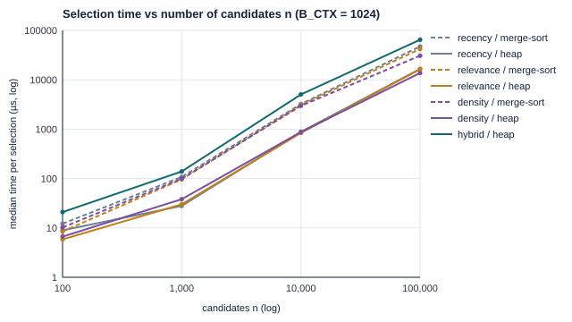
| Operation counts and memory | n = 10,000 | n = 100,000 | Theory |
|---|---|---|---|
| Merge-sort comparisons (recency) | 127,267 | 1,605,791 | n log₂ n = 132,877 / 1,660,964 |
| Heap comparisons incl. Floyd build (recency) | 19,287 | 188,469 | build ≤ 2n, + p log n for p = 19 / 14 pops |
| Hybrid: preparation time (hash index, weights) / total | 3,854 / 5,046 µs (76 %) | 48,495 / 64,687 µs (75 %) | O(n·L) dominates; heap part is small |
| Baseline sort: preparation / total | 245 / 3,222 µs (8 %) | 3,817 / 47,231 µs (8 %) | the n log n sort dominates |
| Aux. memory: sort / heap / hybrid | 391 / 235 / 1,763 KB | 3,907 / 2,345 / 14,870 KB | all Θ(n); ≈ 40 / 24 / 180 bytes per candidate |
Dependence on k (n = 10,000, BCTX varied; larger budget → more items selected):
| BCTX | 256 | 1,024 | 4,096 | 16,384 | 65,536 |
|---|---|---|---|---|---|
| k selected (density) | 12 | 48 | 179 | 599 | 1,748 |
| density / merge sort: µs (comparisons) | 2,814 (127,266) | 2,973 (127,266) | 2,558 (127,266) | 3,310 (127,266) | 3,557 (127,266) |
| density / heap: µs (comparisons, pops) | 1,011 (19,225, 12) | 875 (20,101, 48) | 861 (23,309, 179) | 1,169 (33,679, 602) | 1,908 (63,586, 1,838) |
| hybrid: µs (pops, re-insertions) | 5,430 (11, 0) | 5,046 (50, 1) | 5,642 (161, 3) | 5,306 (542, 39) | 7,493 (1,746, 309) |
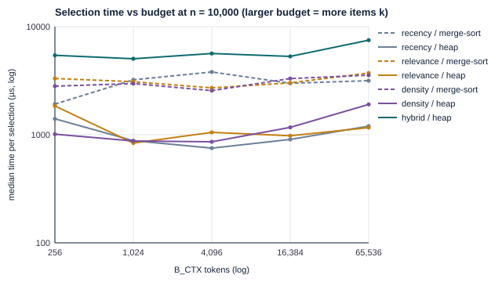
cbm gen, seed 2026)| Category | Queries | Passages | What each scenario contains | Gold tags |
|---|---|---|---|---|
| Time-sensitive policy | 10 | 420 | Revised official notice (mandatory, supersedes the old one), old notice + 3 forum reposts (same group, higher relevance), department e-mail restating the revision, FAQ with the second fact, 8 newest irrelevant notices, 27 distractors. Q10: two mandatory passages of 290 + 330 tokens. | 2 per query (new value + FAQ fact) |
| Multi-source explanation | 10 | 410 | 4 facts from 4 different sources; one long overview (260–380 tokens, relevance 0.93–0.98) with 3 (or all 4) facts; 5 near-duplicate copies of fact 1; one unverified forum post contradicting fact 3; 30 distractors | 4 per query |
| Conversation memory / recency | 10 | 410 | Lab group (early), old language + assistant echo, profile summary (old language, no link), reminder, new language (supersedes old) + echo, 34 chit-chat turns; scenario i puts 3(i−1) of them after the key turns | 3 per query |
| No gold facts | 2 | 60 | Only distractors; the asked fact is absent | none |
| Total | 32 | 1,300 | ci: 81.2 % ≤ 96 tokens, 5.0 % > 186; mean 72.3; 20 supersede links; 11 mandatory passages | 90 gold tags |
How labels were assigned: the generator writes each evidence tag in the same step as the sentence that states it, so the tag value appears in the text. The gold list of a query is the set of values stated by its current (not superseded) official or FAQ passages. Copies carry the same tag, and coverage counts a gold tag once (set union), so repeated copies are never independent evidence. Passages are shuffled (Fisher–Yates) before ids are assigned, so ids reveal nothing.
How they were checked independently (cbm validate, different code path from the generator): every tag value appears in its passage text (1,300 passages); every gold tag is stated by at least one passage that nothing supersedes; every supersede link points to an existing, older passage; gold keys ⊆ asked keys; no-gold queries contain no passage stating the asked key; and the files regenerate byte-for-byte (T27). Result: 0 problems. Queries with no gold facts are excluded from the coverage mean and scored only on whether the agent abstains.
| Item | Setting |
|---|---|
| Configurations | 32 queries × 3 budgets (256 / 512 / 1024) × 4 policies = 384 runs, same input for all (baselines use the merge-sort engine) |
| Timing | 1 warm-up + 5 timed runs per configuration, steady_clock inside selectContext; median per configuration, then median and range over the 32 queries |
| Hybrid parameters | α = 0.5, λ = 0.2, dupPenalty = 0.3, excludeStale = true, dropRedundant = true, order = priority. Fixed before the evaluation; the alternatives appear only in the sensitivity table. |
| Metrics (independent of selector) | violations, tokens, % BCTX, unspent, gold coverage, redundancy (selected − distinct groups), distinct sources, stale selected, answer-quality proxy |
| BCTX | Policy | Infeas. | Viol. | Mean tokens | % BCTX | Coverage | Redund. | Sources | Stale sel. (queries) | Median µs [range] | Aux B |
|---|---|---|---|---|---|---|---|---|---|---|---|
| 256 | recency | 1 | 0 | 249.2 | 97.3 | 0.231 | 11 | 2.61 | 0 (0) | 6.40 [3.5–12.7] | 1,904 |
| relevance | 1 | 0 | 248.0 | 96.9 | 0.544 | 76 | 3.23 | 42 (19) | 6.75 [3.9–14.7] | 1,939 | |
| density | 1 | 0 | 244.8 | 95.6 | 0.631 | 67 | 3.55 | 42 (19) | 7.35 [3.3–16.4] | 2,061 | |
| hybrid | 1 | 0 | 244.7 | 95.6 | 0.792 | 0 | 3.65 | 0 (0) | 16.30 [3.3–38.4] | 18,149 | |
| 512 | recency | 1 | 0 | 503.5 | 98.3 | 0.286 | 34 | 3.55 | 0 (0) | 6.40 [2.8–14.2] | 2,180 |
| relevance | 1 | 0 | 504.5 | 98.5 | 0.842 | 82 | 3.81 | 56 (19) | 6.45 [2.7–15.6] | 2,166 | |
| density | 1 | 0 | 499.6 | 97.6 | 0.792 | 109 | 5.03 | 48 (19) | 7.00 [2.2–12.2] | 2,538 | |
| hybrid | 1 | 0 | 500.8 | 97.8 | 0.908 | 0 | 4.97 | 0 (0) | 15.85 [2.7–18.8] | 18,530 | |
| 1024 | recency | 0 | 0 | 1014.4 | 99.1 | 0.603 | 84 | 5.06 | 4 (2) | 6.80 [5.0–14.4] | 2,870 |
| relevance | 0 | 0 | 1017.1 | 99.3 | 0.950 | 119 | 5.44 | 60 (20) | 6.90 [4.5–13.0] | 2,820 | |
| density | 0 | 0 | 1006.8 | 98.3 | 0.967 | 152 | 5.91 | 57 (20) | 7.40 [5.5–8.9] | 3,286 | |
| hybrid | 0 | 0 | 1011.6 | 98.8 | 1.000 | 0 | 5.84 | 0 (0) | 16.95 [11.3–20.4] | 19,688 |
Coverage = |gold tags in selected| / |gold tags|, averaged over the 30 answerable queries; the INFEASIBLE run (Q10 at 256 and 512: mandatory 620 tokens) counts as 0 for every policy. Stale = superseded passages (or copies of them) selected while the newer passage was a candidate. Trade-off acknowledged: the hybrid is about 2.5× slower and uses 7× to 10× more auxiliary memory than the baselines at this size. It also uses slightly fewer tokens, because it refuses copies that add nothing.
| BCTX | Category | Recency | Relevance | Density | Hybrid |
|---|---|---|---|---|---|
| 256 | policy | 0.450 / 0 / 3 | 0.450 / 22 / 15 | 0.550 / 22 / 17 | 0.800 / 0 / 0 |
| multisource | 0.175 / 0 / 4 | 0.250 / 0 / 40 | 0.375 / 0 / 27 | 0.575 / 0 / 0 | |
| memory | 0.067 / 0 / 2 | 0.933 / 20 / 20 | 0.967 / 20 / 20 | 1.000 / 0 / 0 | |
| 512 | policy | 0.450 / 0 / 14 | 0.700 / 36 / 33 | 0.850 / 28 / 32 | 0.900 / 0 / 0 |
| multisource | 0.275 / 0 / 14 | 0.825 / 0 / 28 | 0.525 / 0 / 53 | 0.825 / 0 / 0 | |
| memory | 0.133 / 0 / 4 | 1.000 / 20 / 20 | 1.000 / 20 / 20 | 1.000 / 0 / 0 | |
| 1024 | policy | 0.650 / 4 / 28 | 0.950 / 40 / 47 | 1.000 / 37 / 53 | 1.000 / 0 / 0 |
| multisource | 0.625 / 0 / 43 | 0.900 / 0 / 49 | 0.900 / 0 / 71 | 1.000 / 0 / 0 | |
| memory | 0.533 / 0 / 8 | 1.000 / 20 / 20 | 1.000 / 20 / 20 | 1.000 / 0 / 0 |
No model access was used. Two deterministic extractive agents read only the ContextPackage: first-mention (position-biased: uses the first passage stating each asked fact) and authority (order-independent: most reliable source, then newest). Scoring guide: for each asked fact, correct = the gold value, contradictory = a non-gold value (stale or wrong), missing = not answered. Unsupported claims are 0 by construction, because the agents only repeat values found in the context. Section 8 of the brief allows a proxy like this with the instructor's approval.
| 12 fixed questions, BCTX = 512 | Recency | Relevance | Density | Hybrid |
|---|---|---|---|---|
| Policy Q01–Q04, facts correct (first-mention / authority) | 4/8 · 4/8 | 6/8 · 6/8 | 7/8 · 7/8 | 8/8 · 8/8 |
| Multi-source Q11–Q14 | 3/16 · 4/16 | 14/16 · 14/16 | 6/16 · 9/16 | 11/16 · 13/16 |
| Memory Q21–Q24 | 4/12 · 4/12 | 8/12 · 12/12 | 10/12 · 12/12 | 12/12 · 12/12 |
| Total correct (first-mention / authority) | 11/36 · 12/36 | 28/36 · 32/36 | 23/36 · 28/36 | 31/36 · 33/36 |
| Contradictory claims (first-mention / authority) | 4 · 3 | 4 · 0 | 6 · 1 | 2 · 0 |
| All 30 answerable questions (facts correct of 90, contradictory) | Recency | Relevance | Density | Hybrid |
|---|---|---|---|---|
| 256, first-mention / authority | 18, 10 / 18, 10 | 37, 12 / 47, 2 | 46, 16 / 55, 7 | 68, 5 / 69, 4 |
| 512, first-mention / authority | 22, 10 / 24, 8 | 67, 10 / 77, 0 | 55, 17 / 68, 4 | 75, 6 / 81, 0 |
| 1024, first-mention / authority | 47, 10 / 54, 3 | 75, 10 / 85, 0 | 69, 17 / 86, 0 | 84, 6 / 90, 0 |
| No-gold questions: agent abstained ("insufficient evidence") | 2/2 | 2/2 | 2/2 | 2/2 |
Negative finding: on multi-source questions at 512, relevance-first answered more facts (14/16) than the hybrid (11 to 13/16), because the long overview passage it keeps states three facts at once (6.4, 7 Q1). The hybrid's remaining contradictory claims (5 to 6 with first-mention) come from passages with no supersede link: the unverified forum post that contradicts fact 3, and the memory profile summary that still holds the old language (8.4).
| Variant | Coverage 256 / 512 / 1024 | Multi-source 512 | Long passage taken (512) | Stale (1024) | Redund. (1024) | First-mention correct 512 |
|---|---|---|---|---|---|---|
| Default α 0.5, exclude stale, drop copies | 0.792 / 0.908 / 1.000 | 0.825 | 0/10 | 0 | 0 | 75/90 |
| α = 0 (no cost normalisation) | 0.683 / 0.892 / 0.975 | 0.875 | 10/10 | 0 | 0 | 71/90 |
| α = 1 (full per-token density) | 0.750 / 0.900 / 1.000 | 0.800 | 0/10 | 0 | 0 | 74/90 |
| Stale penalty ×0.25 instead of exclusion | 0.792 / 0.908 / 1.000 | 0.825 | 0/10 | 2 | 0 | 75/90 |
| Keep redundant copies | 0.792 / 0.908 / 1.000 | 0.825 | 0/10 | 0 | 5 | 75/90 |
| No coverage/redundancy terms (λ = 1, dup = 1) | 0.717 / 0.825 / 0.983 | 0.575 | 0/10 | 0 | 114 | 70/90 |
The coverage/redundancy term matters most (+0.083 at 512). Stale exclusion matters only when budget is plentiful. α trades the long passage against several short ones; no single α wins every budget.
cbm muet → results/muet_summary.txt)Data: the MUET corpus of the PBL project (data/passages.txt): 31 documents of the Department of Computer Systems Engineering, MUET Jamshoro, 155 passages, with its 20 hand-labelled questions (data/queries.txt). As stated in data/DATASET.md, the rules were written by the team for testing; only D24 restates the real CS-251 PBL brief. cep/scripts/muet_dataset.py converts it: every question gets all 155 passages as candidates (3,100 records). Relevance = BM25 with the PBL synonym list, scaled to the best passage; cost = ceil(1.3 × words) + 6 (an estimate: no tokenizer was available); source = document id; reliability A, except the department repost D23 (B) and the forum text in D22-P3 (C). Revised notices supersede the original passage in the same position: D09 → D04 (attendance 70 % → 75 %), D20 → D19 (exam dates), D29 → D28 (registration 10 → 17 September). D02-P1..P3 and their reposts D23-P1..P3 form duplicate groups. Facts are key:value tags copied from the passage text; gold = the facts of the PBL gold passages. Categories: keyword and paraphrase → lookup (12), version → policy (3), ambiguous → multisource (2), unanswerable (3, no gold facts). cbm muet validates the labels (0 problems) before running.
| BCTX | Policy | Viol. | % BCTX | Coverage | Redund. | Stale sel. (queries) | Median µs | First-mention correct, contra | Authority correct, contra |
|---|---|---|---|---|---|---|---|---|---|
| 64 | recency | 0 | 96.5 | 0.000 | 0 | 16 (16) | 12.00 | 0/22, 0 | 0/22, 0 |
| relevance | 0 | 90.5 | 0.824 | 2 | 7 (6) | 13.35 | 16/22, 3 | 17/22, 2 | |
| density | 0 | 88.4 | 0.735 | 2 | 11 (9) | 13.10 | 15/22, 2 | 15/22, 2 | |
| hybrid | 0 | 90.0 | 0.824 | 0 | 0 (0) | 30.35 | 17/22, 0 | 17/22, 0 | |
| 128 | recency | 0 | 92.9 | 0.000 | 0 | 7 (7) | 12.40 | 0/22, 0 | 0/22, 0 |
| relevance | 0 | 95.4 | 0.941 | 3 | 10 (6) | 13.50 | 18/22, 3 | 20/22, 1 | |
| density | 0 | 94.9 | 0.853 | 2 | 17 (7) | 13.70 | 18/22, 3 | 18/22, 3 | |
| hybrid | 0 | 94.3 | 0.912 | 0 | 0 (0) | 31.60 | 19/22, 0 | 19/22, 0 | |
| 256 | recency | 0 | 97.6 | 0.059 | 0 | 7 (7) | 13.90 | 1/22, 0 | 1/22, 0 |
| relevance | 0 | 97.7 | 0.941 | 4 | 22 (9) | 15.40 | 18/22, 3 | 20/22, 1 | |
| density | 0 | 97.5 | 0.912 | 4 | 28 (11) | 15.10 | 18/22, 3 | 19/22, 2 | |
| hybrid | 0 | 97.9 | 0.941 | 0 | 0 (0) | 34.75 | 20/22, 0 | 20/22, 0 | |
| 512 | recency | 0 | 98.2 | 0.088 | 0 | 100 (20) | 14.90 | 2/22, 0 | 2/22, 0 |
| relevance | 0 | 99.0 | 0.971 | 6 | 53 (15) | 16.30 | 19/22, 3 | 21/22, 1 | |
| density | 0 | 98.7 | 0.971 | 7 | 59 (15) | 13.60 | 19/22, 3 | 21/22, 1 | |
| hybrid | 0 | 99.0 | 1.000 | 0 | 0 (0) | 33.10 | 22/22, 0 | 22/22, 0 |
| Version question, BCTX = 128 | What each policy's context lets the authority agent answer (gold in bold) |
|---|---|
| M09 minimum attendance (gold 75 percent; detained and must repeat the course) | Recency and hybrid: insufficient evidence. Relevance-first: 75 percent, flagged "sources disagree", but the shortfall rule came from the 2025 notice (D04-P3). Density: 70 percent and the 2025 shortfall rule, both from the superseded notice. |
| M10 CS-251 final exam date (gold 22 December 2026 at 10 am) | Hybrid: correct with no conflict (the original date sheet is excluded). Relevance and density: correct but with the superseded 16 December sheet also in the context ("sources disagree"). Recency: insufficient evidence. |
| M18 registration deadline (gold 17 September 2026) | Hybrid: correct with no conflict. Relevance-first: correct, with the old notice also present. Density: 10 September 2026 from the superseded notice. Recency: insufficient evidence. |
Findings on the MUET documents: 0 budget violations in 320 runs. The hybrid was the only policy that never selected a superseded notice (relevance-first selected 7 to 53) and never gave a contradictory answer; it tied or beat every baseline in coverage except at 128 tokens (0.912 against 0.941), where it skipped the 45-token revised attendance notice for cheaper passages (8.4). Recency-first fails on this corpus because the newest documents (date sheets, viva guidelines, the PBL brief) rarely answer the question. The hybrid is about 2.5× slower (30–35 µs against 12–16 µs for 155 candidates). The untrusted forum passage D22-P3 was selected once in 320 runs (relevance-first, 512); it states no asked fact, so no answer used it. Per-question results are in results/muet_summary.txt.
| Question | Reasoned conclusion with evidence |
|---|---|
| 1. When is a long, highly relevant passage better than several shorter ones? | When it fits with room to spare and states several needed facts that are not available more cheaply. The multi-source overview (260–380 tokens, three or four facts) never fits at 256 (omitted "exceeds BCTX", all policies). At 512, taking it (relevance-first, or the hybrid with α = 0) gave the best multi-source coverage, 0.825 and 0.875, against 0.825 for four short sources (default hybrid) and 0.525 for density. At 1024 the four short sources covered everything: hybrid 1.000 against 0.900 for relevance-first, which spent its budget on the overview plus copies. Rule: take the long passage if its new-evidence count divided by ciα beats the alternatives; α = 0.5 under-weights it at mid budgets (E10 shows the reverse: relevance-first took only the 230-token overview, 3/4, while three policies covered 4/4 with short items). |
| 2. When does newest-first sacrifice key evidence, and when does relevance-first include stale content? | Newest-first fails whenever key facts are older than the chatter or notices around them. Memory coverage was 0.067 / 0.133 / 0.533 because the lab group and the reminder were stated early. Policy coverage stayed at 0.450 up to 512 because the 8 newest notices were irrelevant. It is fresh, though: 0 stale up to 512. Relevance-first includes stale content when old texts score higher than their revisions: old notices and reposts (0.78–0.95) against revisions (0.62–0.80). It selected 42 / 56 / 60 stale passages in 19–20 queries. Every policy and memory query was affected. |
| 3. Can greedy relevance-per-token lose crucial evidence despite high total utility? Counterexample | Yes, in 36 query/budget cases. Q01, BCTX = 256: density selected 6 passages with total relevance 4.114 (mandatory notice, three cheap forum reposts of the old deadline, two short distractors) and missed drop_form:Form AC-12 (coverage 1/2). The hybrid selected 5 passages with total relevance only 3.157 but covered 2/2 (mandatory notice + the FAQ with the form). Cheap copies have high relevance per token but add no new evidence. |
| 4. What dominates the runtime of sorting, heap and hybrid approaches? How do bounds change with n and k? | Sort engine: the Θ(n log n) merge sort, which is 92 % of the time (preparation is 8 %) and independent of k (127,266 comparisons at every budget). Heap engine: O(n) Floyd build plus p log n; it rises only as k grows (63,586 comparisons at k = 1,748). Hybrid: the O(n) hash-index and stale pass, 75–76 % of its time; the lazy heap part grows with k + r (r ≤ 309). See 4.2 and 4.3. |
| 5. Behaviour when crucial items do not fit, sources contradict, ties occur, or most passages are redundant | Do not fit: INFEASIBLE with a diagnostic naming each mandatory id, its cost, the total and BCTX; nothing is silently dropped (Q10: 620 > 256/512; E05: 330 > 256; E12: BCTX = 0). A single optional item larger than BCTX is omitted, and the rest still selected (E04). Contradict: superseded versions are excluded (E08: 1 passage, 60 tokens, current value only, against 3 passages with 2 stale for the baselines). Unlinked contradictions are kept with their provenance; the authority agent prefers the more reliable source and flags "sources disagree" (T23). Ties: the deterministic tie chain (E06, T09). Redundant: one passage per group, plus copies only if they add a new tag (E07: hybrid 2 passages, 70 tokens, 2/2 coverage; baselines 5 copies, 150 tokens, 1/2). |
| 6. Does context ordering change the agent's supported answers? | Only for an order-sensitive agent. With the same selections, the authority agent's results were identical under all three orders (for example, relevance-first at 512: 77/90 in every order). The first-mention agent changed: relevance-first at 512 got 58/90 with 19 contradictions oldest-first, 67/90 with priority order and 76/90 with 1 contradiction newest-first. The hybrid moved less (75 → 71) because its stale passages are already removed. So selection quality (what is in the package) and order effects (how a model reads it) must be measured separately. Order effects depend on the model and should be re-measured with a real LLM [6]. |
cbm test → results/tests.txt): 29/29 PASS| ID | Test | ID | Test |
|---|---|---|---|
| T01 | Empty candidate set → OK, empty package | T15 | Heap engine = merge-sort engine (3,000 runs, 0 mismatches) |
| T02 | BCTX formula incl. negative → 0 | T16 | Lazy hybrid = eager O(n²) greedy (1,000 instances, 1,442 re-insertions) |
| T03 | Zero budget, no mandatory → OK, reasons | T17 | Heap: 20,000 random ops vs reference; Floyd build 9,370 cmps for n = 5,000 |
| T04 | Zero budget + mandatory → INFEASIBLE | T18 | Merge sort sorted and stable (300 arrays) |
| T05 | No item fits → all "exceeds BCTX" | T19 | Linked-list merge sort sorted, stable, tail valid |
| T06 | One item larger than BCTX omitted, rest kept | T20 | Hash map: 20,000 keys, growth, load ≤ 0.6 |
| T07 | Two mandatory over budget → INFEASIBLE naming both | T21 | Zero-cost passage handled |
| T08 | Mandatory selected and placed first | T22 | Three ordering rules |
| T09 | Ties → id order, invariant to input order | T23 | Agents: stale value vs authority + conflict flag |
| T10 | Duplicate id rejected with line number | T24 | Agent abstains when the fact is absent |
| T11 | 15 malformed records, one reason each | T25 | Dataset: 32 scenarios, 1,300 passages, 0 label problems |
| T12 | Near-duplicate group: redundancy 0 vs 4 | T26 | 0 violations in 384 evaluation runs |
| T13 | Old/new policy: superseded + repost omitted | T27 | Dataset regenerates byte-for-byte |
| T14 | Budget safety: 24,000 random runs, 0 violations, partition, determinism | T28 | Scaling workload reproducible |
| T29 | MUET set: 3,100 records, 0 label problems, 0 violations in 320 runs, hybrid never stale |
cbm edge → results/edge_cases.txt)| Case (BCTX) | Recency | Relevance | Density | Hybrid |
|---|---|---|---|---|
| E01 no candidates (512) | OK, 0 selected, 512 unspent, no violation (all policies) | |||
| E02 zero budget: 700 − 300 − 500 → 0 | OK, 0 selected, both items "exceeds BCTX" | |||
| E03 no item fits (256; costs 300–500) | OK, 0 selected, all three omitted with reason | |||
| E04 one item of 900 tokens (256) | 900-token item omitted; the two others selected, 100 tokens, coverage 2/2 | |||
| E05 two mandatory, 150 + 180 (256) | INFEASIBLE: "mandatory passages E05-P1(150) + E05-P2(180) need 330 tokens but B_CTX = 256" | |||
| E06 tied relevance and timestamps (120) | P1, P2 selected in every policy (id tie-break) | |||
| E07 near-duplicate group (160) | 5 copies, 1/2, redund. 4 | 5 copies, 1/2, redund. 4 | 5 copies, 1/2, redund. 4 | 2 items, 70 tok, 2/2, redund. 0 |
| E08 contradictory old/new (200) | 1/1, stale 2 | 1/1, stale 2 | 1/1, stale 2 | 1/1, stale 0 |
| E09 evidence split over 3 sources (200) | 1/3 | 1/3 | 1/3 | 1/3 (fails too) |
| E10 long relevant passage (256) | 4/4 | 3/4 (long only) | 4/4 | 4/4 |
| E11 budgets 256 / 512 / 1024, same input | 0/4, 2/4, 4/4 | 1/4, 2/4, 4/4 | 1/4, 3/4, 3/4 | 1/4, 3/4, 4/4 |
| E12 zero budget + mandatory | INFEASIBLE (all policies) | |||
| E13 zero-cost passage (100) | Both items selected, 100/100 tokens, coverage 2/2 | |||
accepted 2 record(s): M01-P1 M01-P15 rejected 15 record(s): line 3: duplicate passage id M01-P1 in M01 (first seen on line 2) line 4: negative token cost '-20' line 11: mandatory flag 'yes' is not 0 or 1 line 5: token cost '12.5' is not a nonnegative integer line 12: expected 12 fields, found 11 line 6: relevance '1.70' is not a number in [0,1] line 13: missing passage_id line 7: invalid timestamp '2026/03/01' (expected YYYY-MM-DDThh:mm) line 14: missing source_id line 8: invalid timestamp '2026-13-01T10:00' ... line 15: relevance 'abc' is not a number in [0,1] line 9: reliability 'X' is not A, B or C line 16: passage supersedes itself line 10: evidence tag 'rule' is not key:value line 17: token cost '' is not a nonnegative integer
supersedes links. An unlinked contradiction is not detected: the memory profile summary with the old language and the unverified forum post were selected by the hybrid. They cause its 5–6 first-mention contradictions. Possible fix: a per-key "newest wins" rule over evidence tags.cbm select --query Q01 --budget 512 --policy hybrid (from results/sample_package.txt): the package as the agent receives it, the selector's trace and the omission reasons.
Question: What is the last date to drop a course this semester, and which form is needed? Context (485/512 tokens, hybrid-fresh-cover): [1] (Q01-P027 | notices_office | 2026-01-07T08:37 | A) Revised official notice (replaces the earlier one): the last date to drop a course is 6 Mar 2026. [2] (Q01-P040 | dept_email | 2024-04-01T09:53 | A) Update on the robotics club meeting (ref M22). [3] (Q01-P021 | faq_portal | 2026-07-13T10:59 | B) FAQ: course drops are submitted on Form AC-12. [4]–[9] six short distractor updates (P029, P025, P003, P022, P026, P033) Agent (first-mention): drop_deadline = 6 Mar 2026 [Q01-P027, notices_office]; drop_form = Form AC-12 [Q01-P021, faq_portal] [Q01] policy=hybrid-fresh-cover status=OK B_CTX=512 used=485 (94.7%) unspent=27 candidates=42 selected=9 1. Q01-P027 notices_office 2026-01-07T08:37 rel=0.78 c= 62 key=0.7820 MANDATORY drop_deadline:6 Mar 2026 2. Q01-P040 dept_email 2024-04-01T09:53 rel=0.52 c= 28 key=0.0973 misc22:M22 3. Q01-P021 faq_portal 2026-07-13T10:59 rel=0.60 c= 43 key=0.0780 drop_form:Form AC-12 ... omitted Q01-P002 c= 39 superseded by a newer candidate (Q01-P027) omitted Q01-P012 c= 46 superseded by a newer candidate (Q01-P027) omitted Q01-P032 c=123 superseded by a newer candidate (Q01-P027) ... (every one of the 33 omitted passages is listed with its reason)
Under the same budget, relevance-first used all 512 tokens, put the old notice (27 Feb) and three reposts in positions 2–5 and lost the form (1/2). The demo script for the viva is: cbm select (budget-constrained query) → cbm compare --query Q01 --budget 256 (policy comparison) → cbm select --query Q10 --budget 512 (INFEASIBLE) → cbm bench (scale test).
Double-click cep/run_demo.bat (it builds cbm.exe with g++ if needed), or run cbm / cbm menu from the cep/ folder. The menu shows the current question, budget (Btotal − Rfixed − Ranswer = BCTX), policy and order, and repeats after every action. Invalid input is re-asked.
| Menu | Action | What it shows (suggested screenshot) |
|---|---|---|
| 1 | Run selection for this question | Context package as the agent receives it, the selector trace (key, cost, tags), every omitted passage with its reason, tokens/BCTX, coverage, time and operation counts, both agents' answers and the gold evidence. Screenshot: Q01, hybrid, BCTX 512. |
| 2 | Compare all four policies | One row per policy: status, tokens, coverage, stale, redundancy, sources, time, answer. Screenshot: Q01 at BCTX 256 (only the hybrid covers 2/2). |
| 3 / 9 | Choose / list questions | By number or id (Q01–Q32, or E01–E13 in the edge-case set). |
| 4 | Set token budget | BCTX directly, or Btotal, Rfixed, Ranswer. |
| 5 / 6 | Choose policy / packaging order | Four policies (baselines: merge-sort or heap engine); priority, oldest-first or newest-first order. |
| 7 | Switch dataset | Evaluation set, edge cases or MUET documents (M01–M20). Screenshots: E05 with option 2 (INFEASIBLE with its diagnostic); MUET M09 or M18 at BCTX 128 with option 2 (old vs revised notice). |
| 8 | Run the automated tests | T01–T29 with PASS/FAIL. Screenshot: "29/29 tests passed". |
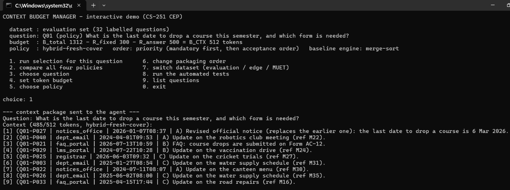
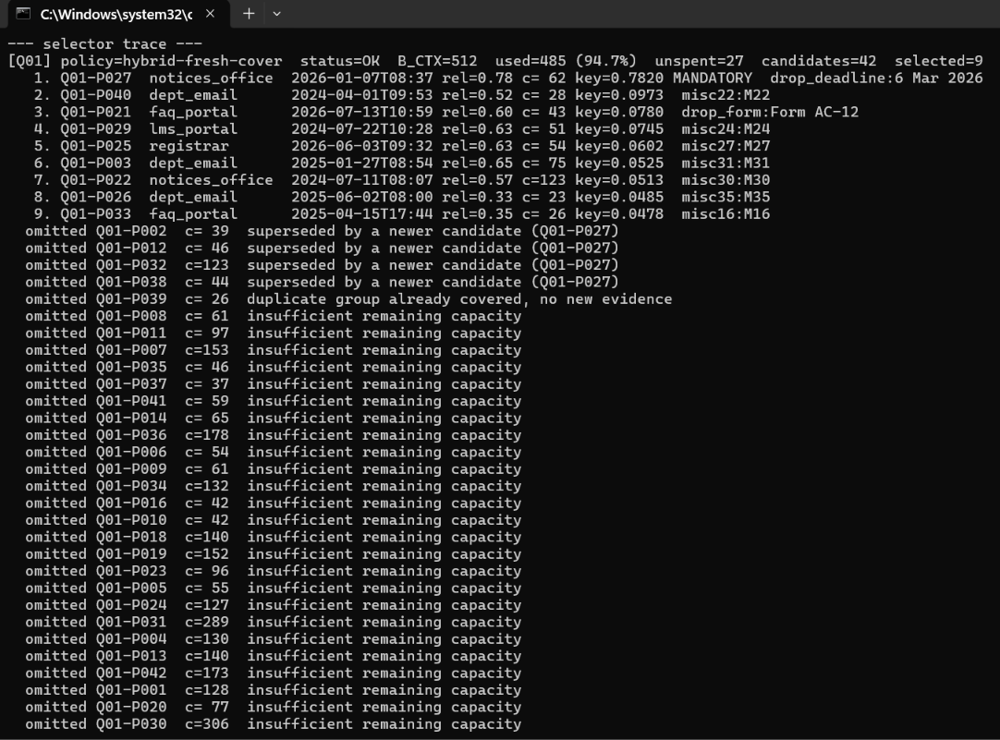
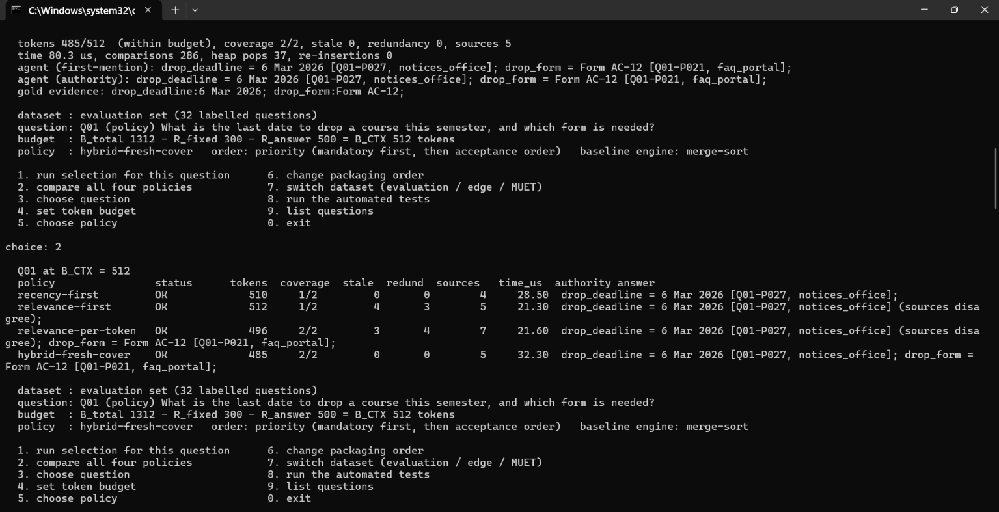
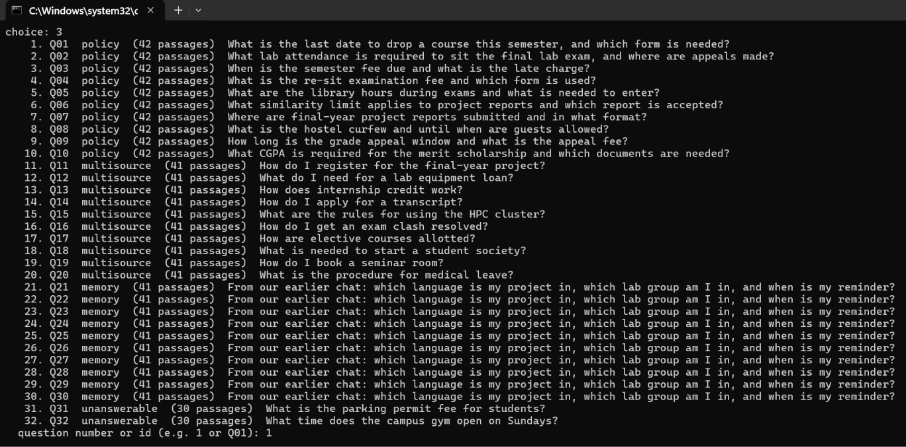
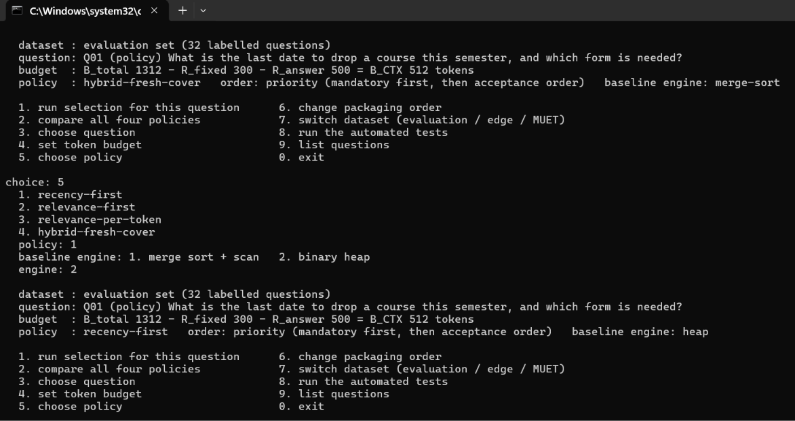
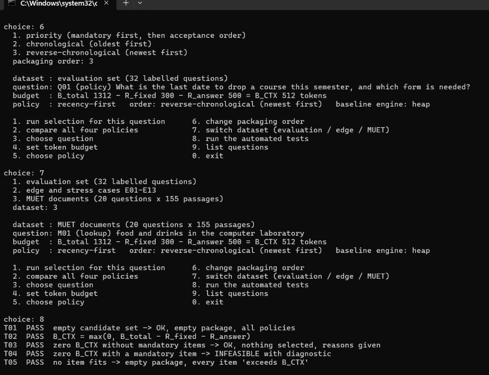
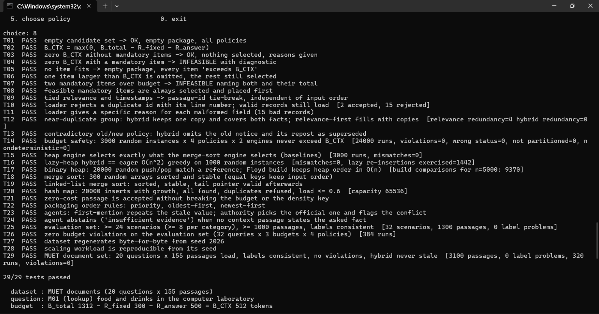
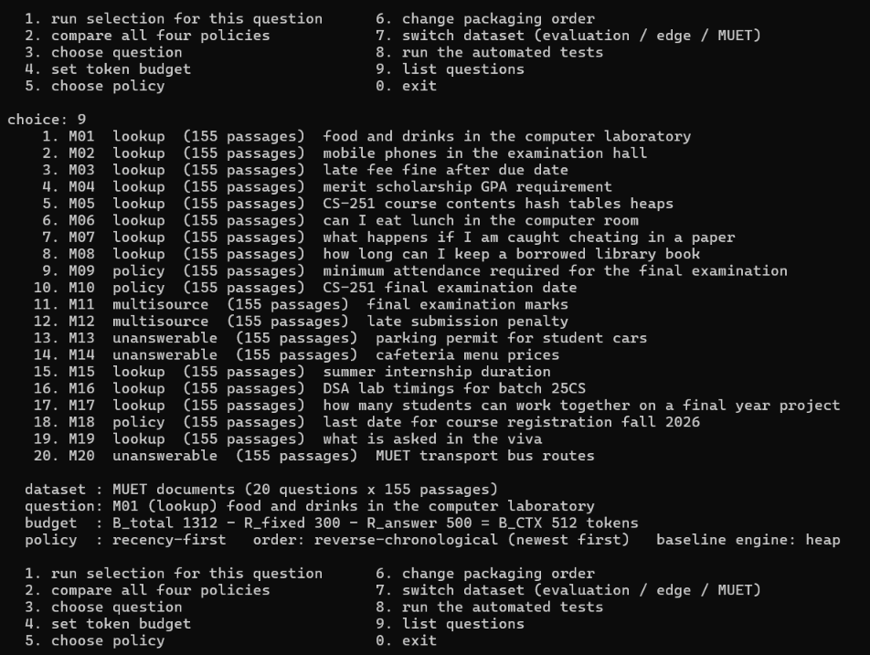
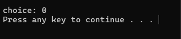
run_demo.bat keeps the window open until a key is pressed.| Week | Work package | Deliverable / evidence here | Owner |
|---|---|---|---|
| 1 | Requirements, stakeholders, budget model, dataset schema, risk register | Part 1, 2.1, 10.3 | Waqas Ali (lead), Mehran Ali |
| 2 | Loader + validation; three baselines (sort and heap engines); budget tests | loader.cpp, selector.cpp, T01–T15 | Mehran Ali |
| 3 | Hybrid policy, hash map, lazy heap, packaging (linked list), invariants | 3.4, T12–T16, T19–T22 | Waqas Ali |
| 4 | Labelled dataset, edge cases, complexity analysis, scaling benchmark, agent proxy | Parts 4–6, 8 | Gaffar (dataset, edge cases), Basit Azam (complexity, benchmark) |
| 5 | Comparison, investigations, document, demo, viva | Parts 7, 9, this document | All four; Waqas Ali leads the demo |
Team: Waqas Ali (25CS061, lead), Mehran Ali (25CS009), Gaffar (25CS067), Basit Azam (25CS113). Each member presents the part they own and answers viva questions on it.
| # | Observation | Decision / change | Effect (measured) |
|---|---|---|---|
| 1 | The hybrid filled leftover budget with copies of an already-covered group (T12 failed its design target) | Added dropRedundant: omit a copy that adds no new tag (still exact for lazy greedy because it stays true once true) | Redundancy 0; T12 and T16 pass |
| 2 | All memory scenarios had chatter only after the key turns, so recency-first scored 0.0, a dataset artefact | Generator now puts 0, 3, …, 27 trailing chatter turns in scenarios Q21–Q30 | Recency memory coverage 0.067 / 0.133 / 0.533 |
| 3 | Wide benchmark ranges on a loaded machine | Kept run 1, ran again with 9 repetitions; final run on the final binary | Medians within ~10 % (4.3) |
| 4 | Needed evidence for "what dominates runtime" | Added a preparation-phase timer (prepMicros) to the metrics and the benchmark CSV | Hybrid: 75–76 % is hashing (4.2) |
| 5 | A memory profile summary repeats a stale value without a link | Kept as a known limitation; not hidden by the generator | 8.4 |
| Risk | Effect | Mitigation | Status |
|---|---|---|---|
| Budget overflow | LLM request rejected / truncated | Single shared check + independent validator + randomized property test | 0 violations |
| Silent loss of mandatory evidence | Policy officers mis-served | INFEASIBLE with diagnostic, nothing partial | T04, T07, Q10 |
| Lazy greedy differs from intended greedy | Wrong selections | Eager O(n²) oracle on 1,000 random instances | T16, 0 mismatches |
| Label leakage / bad gold | Inflated coverage | Shuffle before ids; independent validator; text-vs-tag check | 0 problems |
| Timing noise | Misleading speed claims | Warm-up, ≥ 5 (9) repetitions, medians + ranges, repeated runs, op counts | Ranges still wide |
| Non-reproducible data across compilers | Results cannot be checked | Own SplitMix64 instead of std:: distributions | T27, T28 |
Went well: property tests (T14–T16) caught design gaps early and give strong evidence of budget safety. Went badly: the first memory dataset was too uniform and produced a misleading 0.0 for recency, which had to be fixed in the generator. Next time: fix the evaluation parameters before generating data, run benchmarks on an idle machine, and plan a real-LLM check of the proxy.
| Attribute / outcome | Evidence in this solution |
|---|---|
| WP1 Depth of knowledge | Own heap, merge sort, linked-list sort, hash map; invariants; lazy greedy correctness argument; budget-safety proof (3.2–3.6) |
| WP2 Conflicting requirements | Freshness vs relevance, coverage vs tokens, quality vs latency/memory, quantified (1.3, 6.1) |
| WP3 Depth of analysis | No policy dominates: relevance-first beats the hybrid on multi-source answers at 512; α = 0 beats default at 512; E09 fails for all (6.3, 6.4, 8.2) |
| WP6 Stakeholder needs | Each stakeholder requirement mapped to a design decision and its measured cost (1.3) |
| WP7 Interdependence | Loader ↔ hashing, metadata ↔ selection, ordering ↔ agent answers (3.1, 7 Q6) |
| CLO-2 (C3, PLO-2) | Problem formulation, alternatives and justified selection/ordering algorithms (Parts 1, 3) |
| CLO-3 (C4, PLO-3) | Best/average/worst-case and auxiliary-space analysis compared with measurements (Part 4) |
| Check | Brief Section 12 checklist item | Where |
|---|---|---|
| ✔ | Always enforces BCTX and signals infeasible mandatory combinations | 3.6, T14, T26, E05 |
| ✔ | At least two core DSA structures/algorithms implemented and tested ourselves | 3.2, T15–T20 |
| ✔ | Compared recency-first, relevance-first, relevance-per-token and our strategy | Parts 6, 7 |
| ✔ | 24+ labelled queries and scalable workloads with reproducible seeds | 5.1 (32 queries, seeds), 6.5 (20 MUET questions), 4.2 |
| ✔ | Theoretical and empirical time/space plus failure cases | Part 4, 8.2, 8.4 |
| ✔ | Coverage, budget use, redundancy, provenance/freshness and answer quality (proxy) | 6.1–6.3 |
| ✔ | Source/build files, logs, tests, raw results and a demonstration path | cep/, Part 9 |
| ✔ | Report evidence mapped to CEP attributes and CLO/PLOs | This part |
| ✔ | Milestones, responsibilities, risks, change decisions and individual contributions | Part 10 |
| ✔ | Privacy, citation and academic-integrity rules | Synthetic data and the team-written MUET set; no student records; references and AI-use disclosure below |
The C++ code, the synthetic dataset generator, the experiments and this document were produced with the help of an AI coding assistant (Claude, Anthropic) under the team's direction. Every number in this document was produced by running the submitted code (cep/results/). Each team member must be able to explain the code they present in the viva.
cep/)run_demo.bat interactive menu (or: cbm menu)
build.bat (or: make) g++ -std=c++17 -O2 -Wall -Wextra
cbm gen → data/scenarios.txt, data/passages.txt (seed 2026)
cbm validate → results/dataset_validation.txt
cbm test → results/tests.txt (29/29)
cbm edge → results/edge_cases.txt
python scripts/muet_dataset.py → data/muet/ (from ../data/passages.txt, queries.txt, synonyms.txt)
cbm muet → results/muet_summary.txt
cbm eval → results/eval_summary.txt, eval_runs.csv, answer_quality.txt, order_experiment.txt,
sensitivity.txt, sample_package.txt, run_log.jsonl
cbm bench --reps 9 → results/bench_scaling.csv, bench_summary.txt
python scripts/plot_scaling.py → results/scaling_n.svg, scaling_k.svg